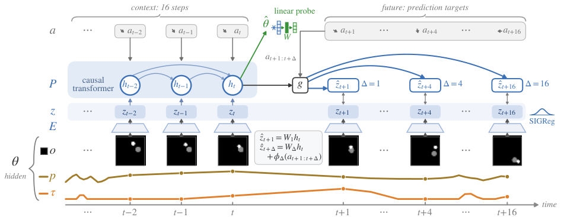
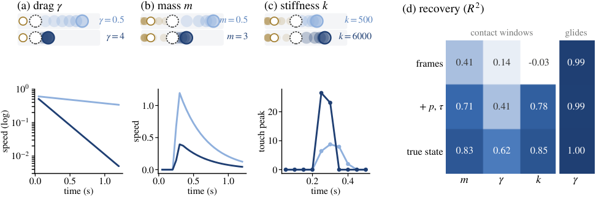
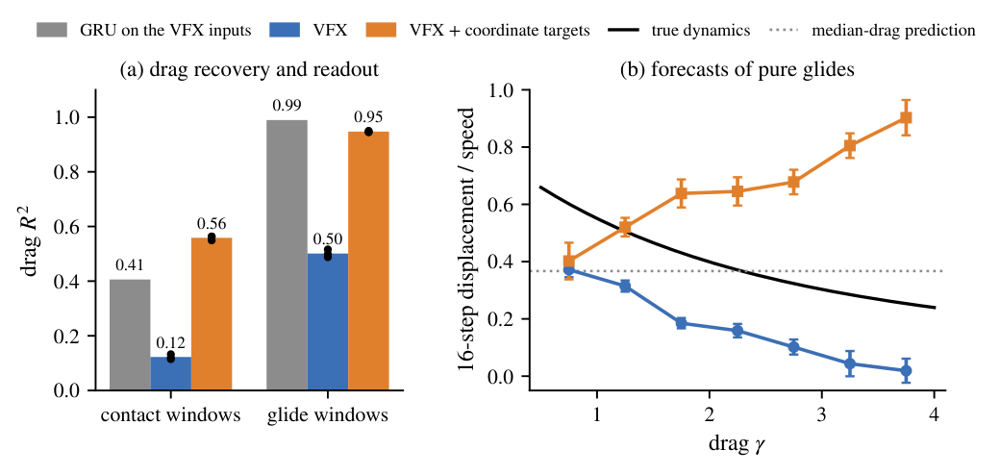
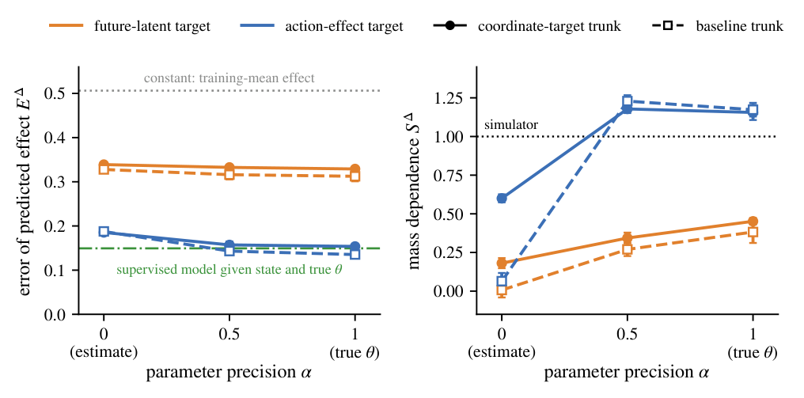
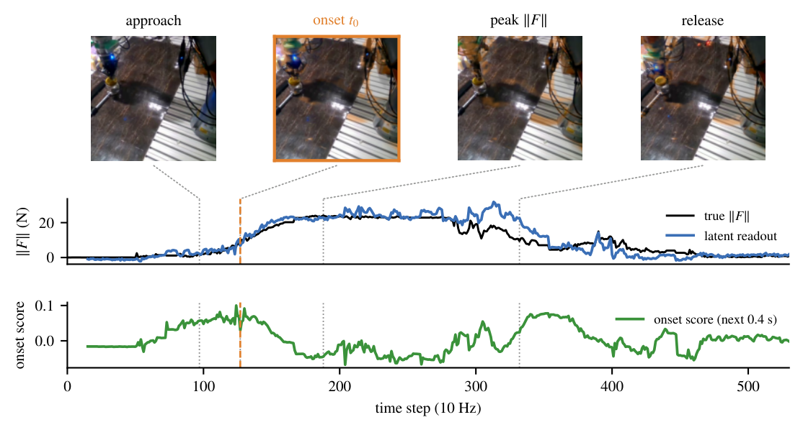
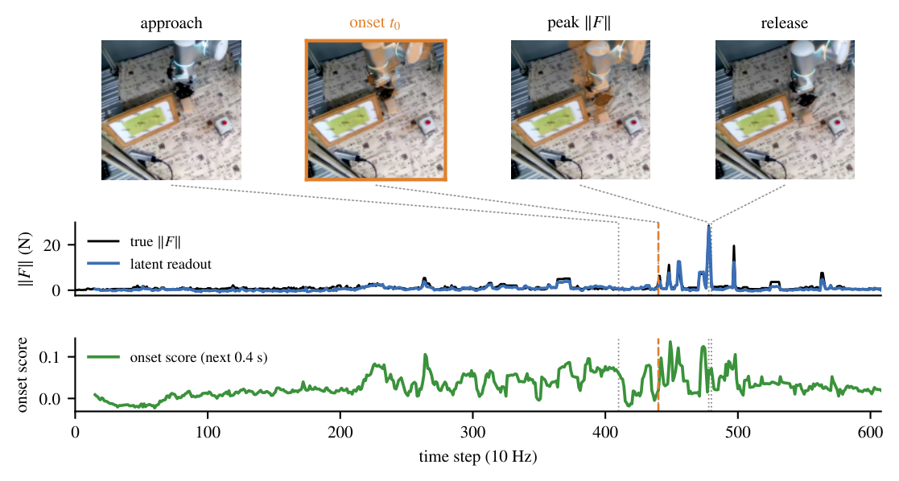

What Can Latent World Models Know?
Physical Information in Multimodal Predictive Representations
1New York University 2Carnegie Mellon University 3Columbia University 4NYU Shanghai
*Equal contribution.
Prediction targets and horizons affect which physical quantities can be read from latent states. A model’s forecasts can depend on a parameter that has weak linear readout, while strong readout can accompany incorrect forecasts.
Abstract
A central premise of latent world models is that predicting the future encourages representations to internalize the physics of their environment. We ask which physical quantities are accessible in learned latent states, what affects their readout, and how those quantities relate to the model’s predictions. We present PokeWorld, a simulated environment in which a robot finger pushes objects whose mass, drag, and contact stiffness vary across episodes while remaining visually identical. We first measure parameter recovery from raw observation sequences, then train matched action-conditioned world models. Prediction targets strongly affect physical-parameter readout. For example, contact stiffness becomes decodable when touch is predicted, while providing touch only as an input does not. Across the tested settings, longer-horizon prediction increases position and velocity readout relative to single-step prediction. Drag is recoverable from raw observations, but has weak linear readout from the learned latent states. Yet the models’ glide forecasts depend systematically on drag. Experiments on RH20T reproduce the same input–target dependence on real multimodal robot data. Together, these results show that observations, prediction targets, and prediction horizons shape both which physical quantities are accessible in latent states and how they affect future predictions.
Overview
We train action-conditioned JEPA world models while varying the sensor inputs, prediction targets, and prediction horizons. The study separates three measurements that answer different questions about physical information.
- Recovery from observations
- A supervised two-layer GRU estimates each parameter from 16-step observation and action windows. Frames are summarized by the image-derived object trajectory. Its held-out R2 is an empirical recovery reference, not an information-theoretic upper bound.
- Linear readout from the latent
- A ridge probe estimates a parameter from the frozen predictor state. A gap below the recovery reference measures limited accessibility to this probe; it does not establish that all parameter information is absent from the latent.
- Forecast dependence
- We measure how predicted displacement or force varies with a physical parameter, controlling for context state and the other parameters. The slope ratio S is 1 when this dependence matches the simulator and 0 when the forecast ignores the parameter. Matching this slope alone does not imply an accurate forecast.


V receives vision and predicts embeddings. VF also receives proprioception and touch, VX predicts those streams without receiving them, and VFX both receives and predicts them. The standard models share architecture, data, and compute.
PokeWorld: Hidden Physical Parameters
A force-controlled finger pushes an object in a two-dimensional arena. Mass, drag, and contact stiffness vary across episodes without changing the object’s appearance. The sensors provide 64 × 64 grayscale frames, finger position and velocity, and touch statistics that preserve brief contact-force peaks.


Environment Demonstrations
The original videos below illustrate the sensor streams and physical effects. Each pair shares an initialization and behavior policy. The mass pair uses a state-dependent policy whose actions diverge, so these clips are illustrative; the fixed-action comparisons are shown in Figure 2 above.
Prediction Targets and Physical-Parameter Readout
Models train on 4,000 episodes of 64 steps. Probe fitting and evaluation use separate episodes. On contact windows, stiffness readout is near chance for VF, which receives touch but does not predict it. Predicting touch raises the readout to 0.43 for VXt and 0.50 for VFX.
Paper Table 1. Linear readout R2 on contact windows (mean ± s.d., three seeds). P: proprioception; T: touch.
| Model | Inputs | Targets | Log mass | Drag | Log stiffness |
|---|---|---|---|---|---|
| V | Vision | Latent | 0.13 ± 0.01 | 0.07 ± 0.01 | −0.03 ± 0.01 |
| VF | Vision, P, T | Latent | 0.21 ± 0.00 | 0.14 ± 0.01 | −0.01 ± 0.00 |
| VXp | Vision | Latent, P | 0.17 ± 0.01 | 0.09 ± 0.01 | −0.01 ± 0.00 |
| VXt | Vision | Latent, T | 0.25 ± 0.01 | 0.12 ± 0.01 | 0.43 ± 0.01 |
| VX | Vision | Latent, P, T | 0.26 ± 0.00 | 0.13 ± 0.01 | 0.47 ± 0.01 |
| VFX | Vision, P, T | Latent, P, T | 0.29 ± 0.01 | 0.12 ± 0.01 | 0.50 ± 0.01 |
| Recovery from VFX inputs | 0.71 | 0.41 | 0.78 | ||
| Recovery from true object state | 0.83 | 0.63 | 0.85 | ||
Mass shows the same ordering more weakly. Drag readout remains low on these contact windows. The recovery rows describe achieved supervised performance and should not be interpreted as ceilings on latent readout.
Longer Horizons Improve Motion Readout
Multi-horizon prediction improves position and velocity readout in each tested observation and regularization setting. The single-step baseline already reads position well under weaker grayscale regularization, so the result is a consistent improvement rather than a universal failure of single-step prediction.
Selected rows from paper Table 2. Mean R2 over three seeds. Each arrow compares one next-step head with heads at 1, 4, and 16 steps within the same setting.
| Observation / regularization | Position | Velocity |
|---|---|---|
| Grayscale, λ = 0.1 | 0.05 → 0.90 | 0.11 → 0.35 |
| Grayscale, λ = 0.02 | 0.85 → 0.99 | 0.30 → 0.64 |
| Frame + difference, λ = 0.02 | 0.67 → 0.95 | 0.40 → 0.78 |
Position is read from the frame embedding; velocity is read from the predictor state. The paper includes next-action and matched-loss-weight controls.
Drag Readout and Forecast Dependence
Drag is easiest to observe while an object glides freely. On pure glides, the recovery reference rises to 0.99 and VFX linear readout rises from 0.12 to 0.50. Its predicted 16-step displacement decreases with drag at a rate close to the true dynamics (slope ratio 1.04), although the displacement is systematically too short.
For a separate intervention, we add object position and velocity to the inputs and use an interaction head over the predictor state and future actions. A coordinate-target model also predicts simulator-derived quantities in which each parameter enters linearly, such as log-speed decay for drag. This model reads drag at 0.95 on glides, yet predicts displacement that increases with drag. Higher readout therefore does not guarantee physically correct dependence.


Responses to New Actions
We also compare three models with object-state inputs and interaction heads: a VFX baseline, the coordinate-target model, and a model given the true parameters. The action-effect test contrasts two prescribed future action sequences from the same simulator state, such as a push versus zero force.
Mass results from paper Table 3 (means over three seeds). SΔ measures the mass dependence of the predicted push effect. EΔ is normalized squared effect error; 0 indicates exact effects; the no-effect prediction has error 1.
| Measurement | Baseline | Coordinate targets | True parameters |
|---|---|---|---|
| Linear readout R2 | 0.10 | 0.48 | 0.84 |
| Continuation dependence Snat | 0.19 | 0.36 | 0.98 |
| Action-effect dependence SΔ | 0.05 | 0.23 | 0.56 |
| Action-effect error EΔ | 0.68 | 0.72 | 0.65 |
Coordinate targets improve mass readout, but the error of the predicted push effect does not fall. Stiffness behaves differently: peak force is itself a prediction target, and its action-effect dependence is closer to the simulator’s (0.62 for the baseline and 0.72 with coordinate targets).
Separating the Representation from the Head Objective
We freeze each predictor and train new heads on the same push-test samples. Each head receives the predictor state, current object and finger state, future actions, and a parameter estimate. The parameter input interpolates from the ridge estimate at α = 0 to the true parameters at α = 1. We compare training the head to predict future latents with training it directly on the action effect.


This diagnostic isolates the objective used to train the head: in this setting, a readable parameter alone is insufficient for an accurate predicted action effect.
Force Readout on Real Robot Data
RH20T provides synchronized cameras, robot pose, and wrist force–torque. We evaluate current force from the frame embedding and force 0.4 seconds ahead from the predictor state. These measurements concern force, since RH20T does not provide ground-truth mass, drag, or stiffness labels.
Paper Table 4. Flexiv held-out-task R2 (mean ± s.d., three seeds). F supplies pose and force inputs; X adds pose and force targets.
| Model | Current force | Future force (0.4 s) |
|---|---|---|
| V | −0.28 ± 0.13 | −0.15 ± 0.07 |
| VX | −0.21 ± 0.02 | −0.09 ± 0.06 |
| VF | −0.16 ± 0.08 | −0.10 ± 0.05 |
| VFX | 0.88 ± 0.03 | 0.47 ± 0.00 |
| Untrained fused-input model | 0.91 | 0.38 |
The untrained encoder already exposes current force through its fused inputs. Training with visual targets alone reduces this readout below zero; predicting force preserves it. For future force, VFX reaches 0.47, compared with 0.46 for a GRU trained on raw sensor history and 0.31 for persistence. Future force is read with an MLP probe rather than a linear probe.




Supplementary Planning Demonstrations
These original push-to-goal videos are retained as qualitative demonstrations from earlier checkpoints. They are outside the current paper’s main evaluation. The two checkpoints also use different regularization weights, so the clips do not isolate the effect of prediction targets.
View the two planning examples
Findings and Scope
- Predicting touch improves stiffness readout in PokeWorld. On RH20T, predicting force preserves force readout when force is also an input.
- Longer prediction horizons improve position and velocity readout across the tested observation and regularization settings.
- Linear readout and forecast dependence can diverge in either direction. Tests of new action effects reveal errors that readout alone does not expose.
The study uses a two-dimensional simulator with three hidden parameters and world models of about five million parameters. The intervention and frozen-head experiments receive object state, and coordinate targets use simulator state. Recovery references report the performance of a particular estimator; probe results characterize accessibility to the tested readouts. These conditions matter when extending the findings to larger models or other environments.
BibTeX
@misc{tan2026identifiability,
title = {What Can Latent World Models Know? Physical Information
in Multimodal Predictive Representations},
author = {Tan, Kaizhen and Xu, Sizhe and Xu, Xin and Tao, Siru and
Li, Yixiao and Hong, Hanzhe and Feng, Yang and
Du, Heqing and Wang, Zhaonan},
year = {2026},
eprint = {2607.27017},
archivePrefix = {arXiv},
primaryClass = {cs.LG},
url = {https://arxiv.org/abs/2607.27017}
}